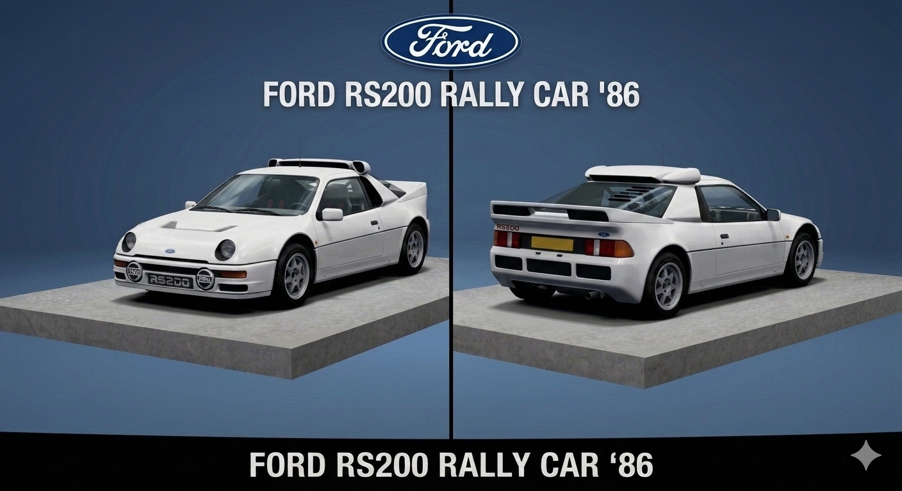
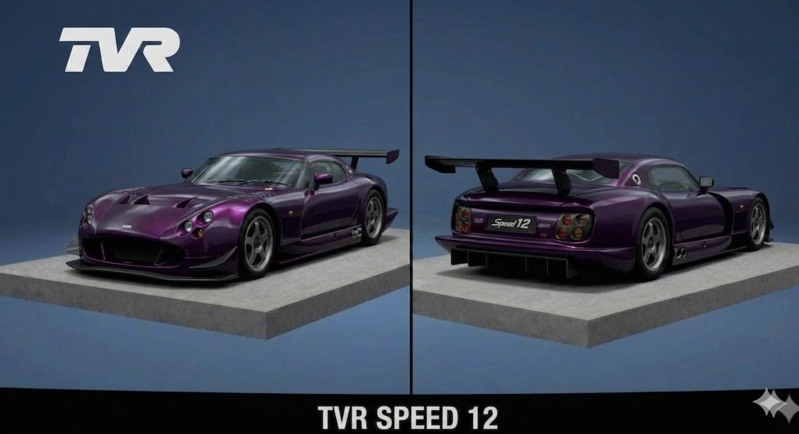

Toyota MR2 Supercharger 1600 G-Limited '86

- Carro: Toyota MR2 Supercharger 1600 G-Limited '86
- Tração: MR
- Motor: Supercharged 1.6-liter 4A-GZE inline-4
Por que entrou no Top 5: É um carro barato comprado como usado, e já dá para ganhar bastante corridas logo de cara. É fácil de guiar, leve e rápido.
Ford RS200 Rally Car '86

- Carro: Ford RS200 Rally Car '86
- Tração: 4WD
- Motor: Turbocharged 1.8-liter Ford-Cosworth BDT inline-4
Por que entrou no Top 5: Um ótimo carro de rally. Com os ajustes certos dá para ganhar praticamente todas as corridas de rally.
TVR Speed 12

- Carro: TVR Speed 12
- Tração: FR
- Motor: Naturally-Aspirated 7.7-liter V12
Por que entrou no Top 5: Um carro extremamente rápido, mas precisa de técnica para guiar. Quando acelera ela parece que trocou para um jogo de tiro o V12 ronca muito alto.